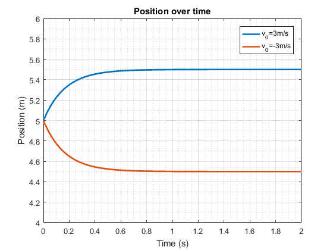
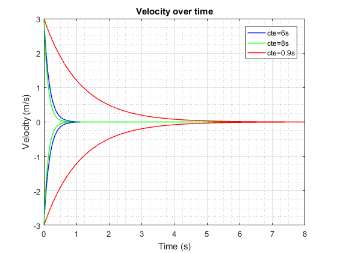
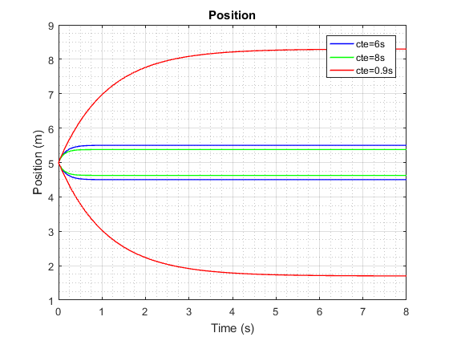

Study of car velocity and position
Here we evaluate a a physhical model of a car going forward taking in account different values of the contant of time which is given by the friction constant divided by mass
Contents
Load model
function carr
close all; %Load file in system memory file='carro'; load_system(file);
Variable Definition
m=[30 80 10];
beta=[5 10 11] ;
v0=3;
nv0=-v0;
y0=5;
%Set Variables into strings (needed to set model parameters)
v0str=num2str(v0);
nv0str=num2str(nv0);
y0str=num2str(y0);
StopTime='8';
First case of study: Velocity
Giving the mass, , the friction coeficcient , the initial value of position and its initial velocity  , we get
, we get
sim_and_plot(m,beta,1,v0str,y0str,nv0str,StopTime,1,file,0); xlim([0 2]); xlabel('Time (s)'); ylabel('Velocity (m/s)'); legend('v_0=3m/s','v_0=-3m/s'); title('Velocity over time');
First case of study: Position
Giving the same values as before we get
sim_and_plot(m,beta,1,v0str,y0str,nv0str,StopTime,2,file,0);
xlim([0 2]);
ylim([4 6]);
xlabel('Time (s)');
ylabel('Position (m)');
legend('v_0=3m/s','v_0=-3m/s');
title('Position over time');
 Other Trials: Velocity
In this section we evaluate the velocity and position for two more different values of and . So ![$$m=[30, 80, 10] Kg $$](carr_eq03327842129833449376.png) and , and making
and , and making
sim_and_plot(m,beta,3,v0str,y0str,nv0str,StopTime,1,file,1);
Other Trials: Position
In this section we evaluate the velocity and position for two more different values of and . So and , and making
sim_and_plot(m,beta,3,v0str,y0str,nv0str,StopTime,2,file,1);
end
Selector and Loop Code
inputs: m=mass, beta= friction cte, int i = how many sims you want, string v0str = initial velocity, string y0str = initial position, string nv0str = negtive value for v0, string StopTime = run time of simulation, int type = if you want velocity(1) or position(2) plots, string file = file of the model, int all = if you want all 3 sims (1) or just the first one (0),
function sim_and_plot(m,beta,i,v0str,y0str,nv0str,StopTime,type,file,all) color=['b' 'g' 'r']; %Colors for plots %Start loop with defined i for j=1:i %Set Gain Gain=-m(j)/beta(j); GainStr=num2str(Gain); %Set parameter in model set_param('carro/Integrator','InitialCondition',v0str); set_param('carro/Integrator1','InitialCondition',y0str); set_param('carro/Gain','Gain',GainStr); set_param(file,'StopTime',StopTime); %Start sim and store data mod=sim('carro','SimulationMode','Normal'); time=mod.get('clock'); vel=mod.get('data'); pos=mod.get('data1'); %Start Sim with neg value and store data set_param('carro/Integrator','InitialCondition',nv0str); mod=sim('carro','SimulationMode','Normal'); ntime=mod.get('clock'); nvel=mod.get('data'); npos=mod.get('data1'); %%Plot if(type==1) %type=1 gets the velocity plots if(j==1 && all==0) %all=0 just gets the first plot of the m and beta defined plot(time,vel,'linewidth',2); hold on; plot(ntime,nvel,'linewidth',2); legend('v_0=3m/s','v_0=-3m/s'); elseif (j==1 && all==1) %all=1 gets all the plots h1=plot(time,vel,color(1),'linewidth',1); hold on; plot(ntime,nvel,color(1),'linewidth',1); elseif(j==2 && all==1) h3=plot(time,vel,color(2),'linewidth',1); plot(ntime,nvel,color(2),'linewidth',1); else h5=plot(time,vel,color(3),'linewidth',1); plot(ntime,nvel,color(3),'linewidth',1); legend([h1,h3,h5],'cte=6s','cte=8s','cte=0.9s'); xlabel('Time (s)'); ylabel('Velocity (m/s)'); title('Velocity over time'); end elseif(type==2) %Gets the position plots if(j==1 && all==0) plot(time,pos,'linewidth',2); hold on; plot(ntime,npos,'linewidth',2); elseif (j==1 && all==1) %all=1 gets all the plots h7=plot(time,pos,color(1),'linewidth',1); hold on; plot(ntime,npos,color(1),'linewidth',1); elseif(j==2 && all==1) h9=plot(time,pos,color(2),'linewidth',1); plot(ntime,npos,color(2),'linewidth',1); else h11=plot(time,pos,color(3),'linewidth',1); plot(ntime,npos,color(3),'linewidth',1); legend([h7,h9,h11],'cte=6s','cte=8s','cte=0.9s'); xlabel('Time (s)'); ylabel('Position (m)'); title('Position'); end end end grid on; grid minor; hold off; end